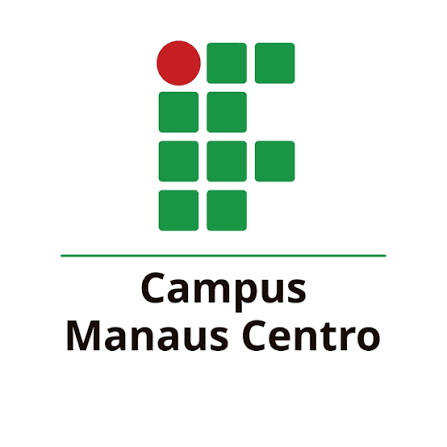

A criação dos Institutos Federais em 2008 revolucionou a educação técnica e tecnológica no Brasil, unificando e expandindo diversas instituições estaduais. O IFAM, com raízes desde 1909, evoluiu de escolas técnicas e agrotécnicas para um complexo educacional com 15 campi no Amazonas. Oferece ensino básico, técnico, superior e pós-graduação, abrangendo diversas regiões e modalidades, incluindo educação a distância.
Atualmente, atende milhares de estudantes e conta com quase 2 mil servidores. O IFAM é referência em educação profissional e tecnológica na Amazônia
Mais informações sobre os cursos
| Cursos | Modalidade | Duração |
|---|---|---|
| Tecnologia em Análise e Desenvolvimento de Sistemas | Graduação | 3 anos |
| Ciências da Computação | Graduação | 5 anos |
| Tecnologia em Produção Publicitária | Graduação | 5 anos |
A Iniciação Científica (IC) é uma modalidade de pesquisa que contribui na formação científica de alunos da Graduação ou do Ensino Médio sob a pespectiva teórica e metodológica exigida para uma pesquisa científica, que oportuniza o engajamento do aluno na atividade da pesquisa científica e que pode despertar o interesse destes pela ciência.
Mais informações sobre pesquisas| Área | Linha |
|---|---|
| Computação | Engenharia de Software |
| Computação | Ciência de Dados |
| Matemática | Cálculo Integrado |
A Biblioteca do Campus Manaus Centro tem como finalidades proporcionar à comunidade acadêmico-escolar o acesso organizado à informação registrada em seus diversos suportes e que atendam às ações e atividades de ensino, pesquisa e extensão.
Mais informações sobre a biblioteca